Das Studio
Dein Zuhause auf Zeit in den Walliser Alpen

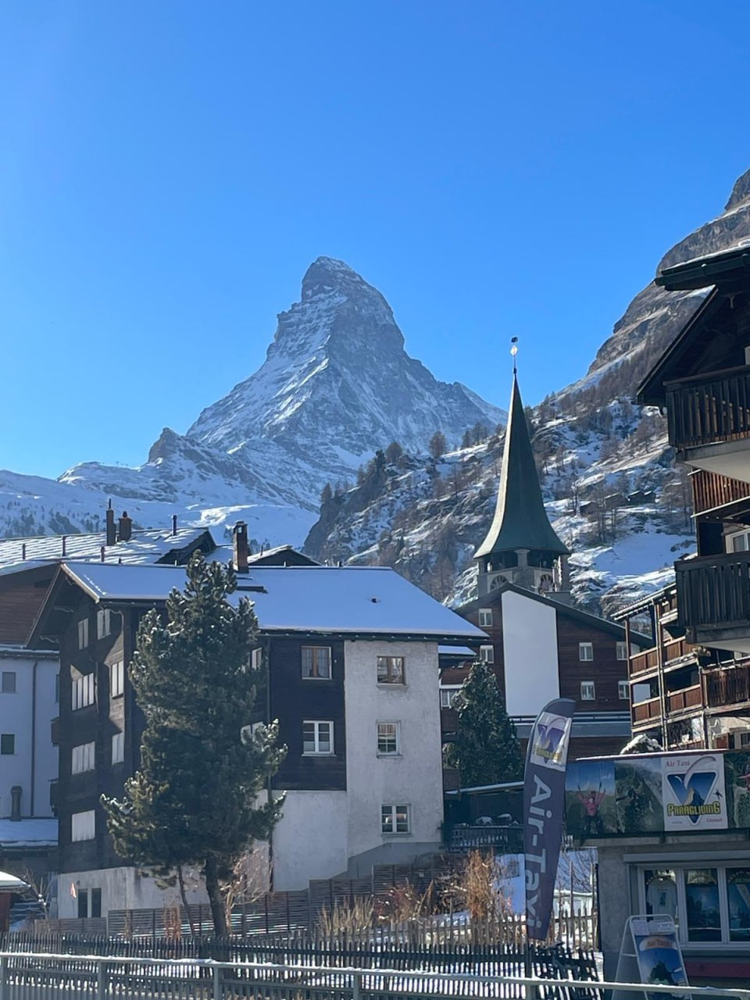
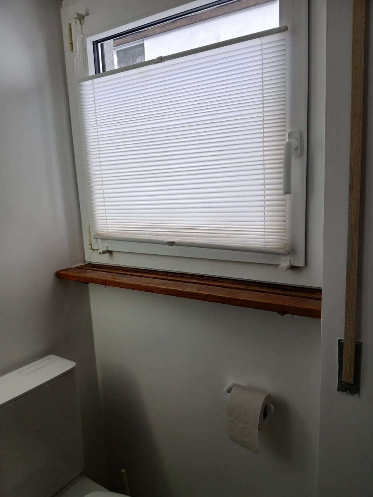

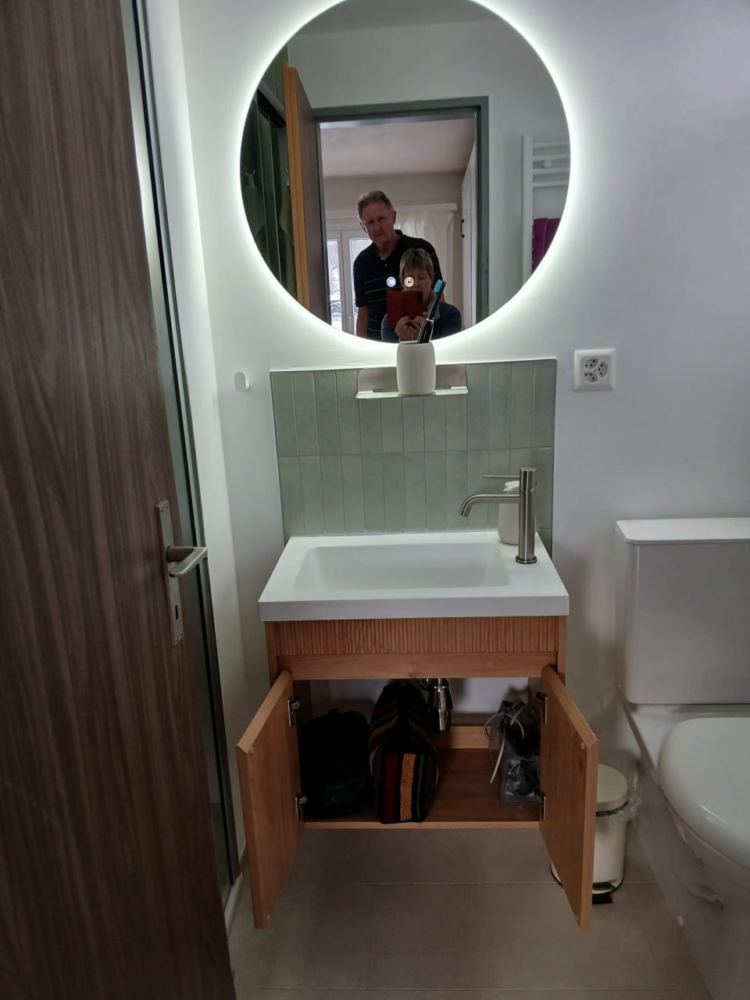
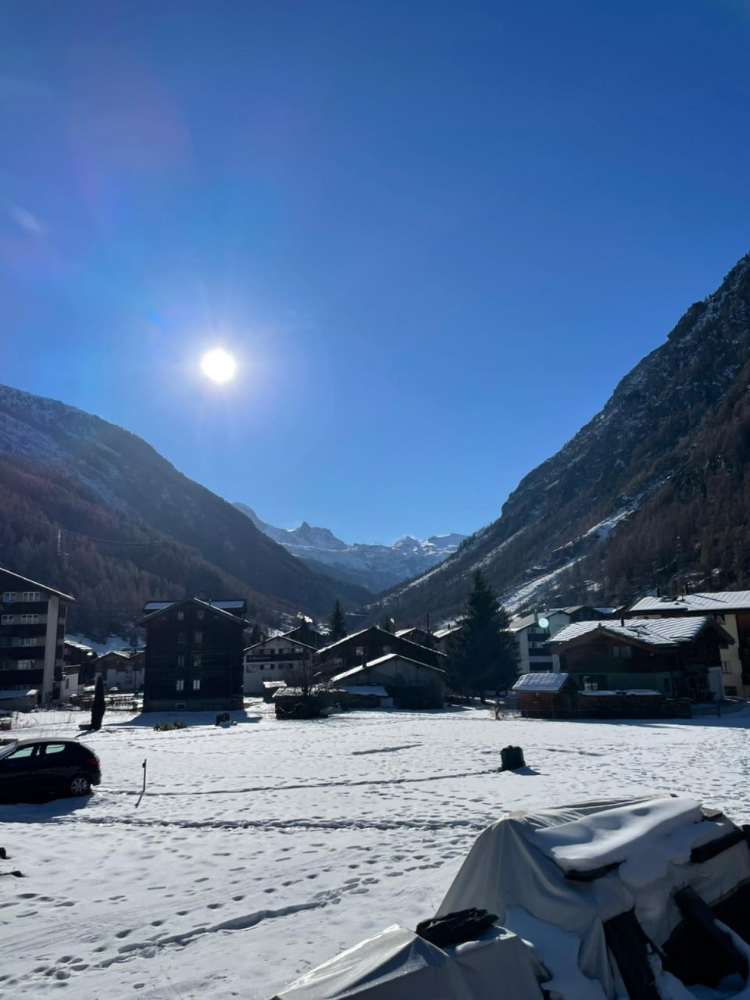



Ihr findet unser Studio im Haus Miranda — wenn ihr am Haus ankommt (Haustür ist offen), geht ihr die ersten paar Stufen hinauf. Unser Studio befindet sich im linken Gang ganz hinten auf der rechten Seite (Studio Bokel).
Leider können wir nicht persönlich da sein, um euch zu begrüßen. Den Schlüssel findet ihr im Schlüsselsafe neben der Eingangstür. Bei Abreise bitte den Schlüssel wieder dort einlegen. Check-out: bis 12:00 Uhr.
Bei Fragen oder Problemen:
Wir drücken die Daumen für viel Sonne und eine gute Sicht auf das Matterhorn! 🏔
2 separate Schrankbetten sind bezogen und bereit. Handtücher liegen im Bad bereit.
Küchengrundausstattung zur freien Nutzung. Bitte bei Abreise sauber und ordentlich hinterlassen.
Nasse Kleidung und Skier im Heizungskeller / Skikeller trocknen — Treppe runter, Flur geradeaus.
Falls etwas zu Bruch geht — kurz Bescheid geben, damit wir es für nachfolgende Gäste ersetzen können.
Zermatt ist autofrei. Parkt euer Auto im Matterhorn Terminal Täsch — direkt am Bahnhof.
Der Pendelzug fährt ca. alle 20 Minuten, Fahrtzeit ~12 Min. Der Transfer ist oft im Skipass integriert.
Ca. 5 km entlang der Mattervispa — schöner, einfacher Weg. Den Schildern Richtung Zermatt folgen.
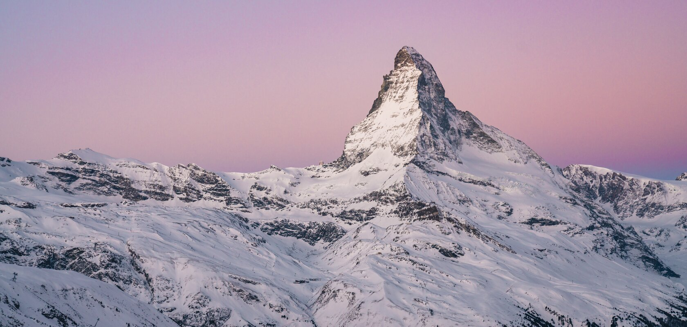
Europas höchste Freiluft-Zahnradbahn (3.089 m) — 29 Viertausender und das Matterhorn aus der Vogelperspektive.
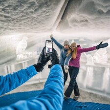
Höchster Bergbahnhof Europas (3.883 m) — ganzjährig Skifahren, Schneegrotte & 360°-Panoramaplattform.
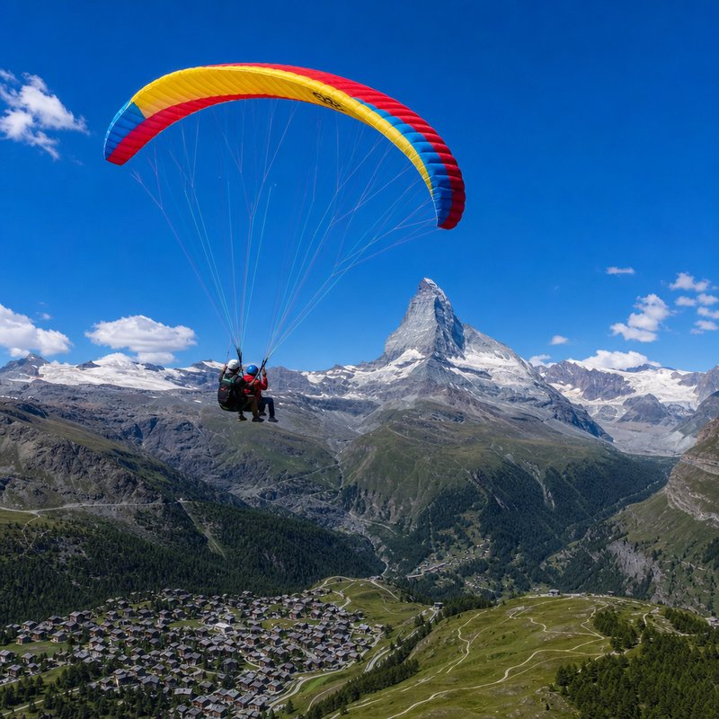
Gleitschirmfliegen über Zermatt mit Matterhorn-Blick — kein Vorwissen nötig, 25–35 Min Flugdauer.
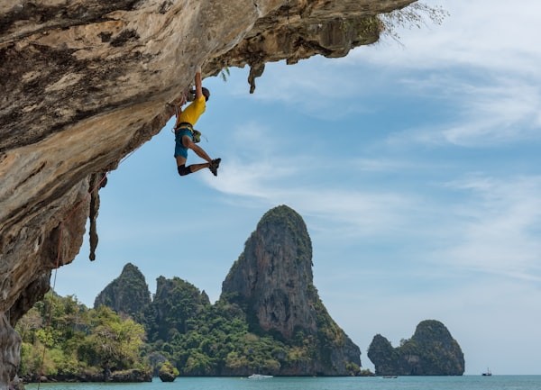
Klettersteige, Felsrouten und alpines Bergsteigen mit zertifizierten Führern — vom Einsteiger bis zum Profi.
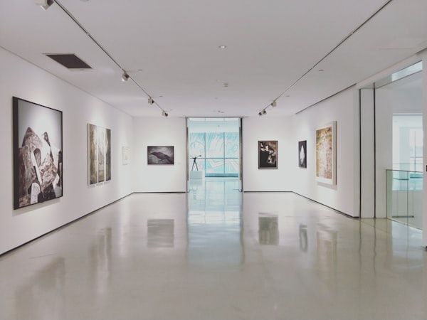
Untertagmuseum mit der Geschichte Zermatts und der legendären Erstbesteigung 1865 — für die ganze Familie.
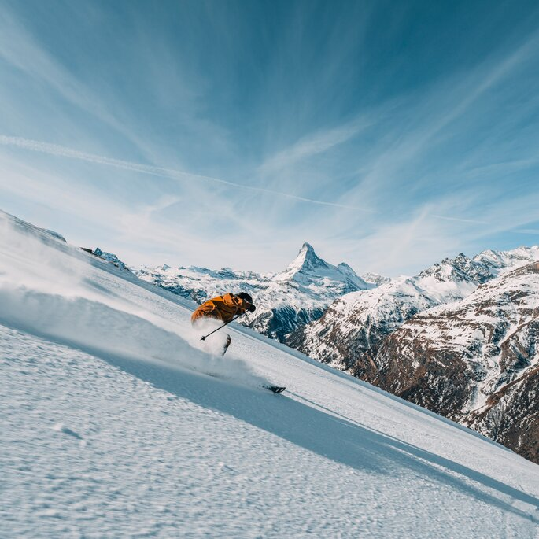
360 km Pisten im Matterhorn Ski Paradise — eines der größten Skigebiete der Alpen, bis 3.883 m Höhe.
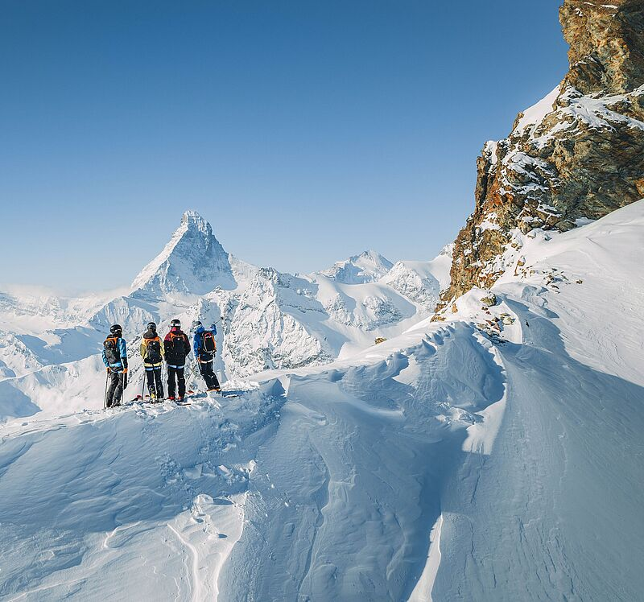
Per Helikopter in unberührten Tiefschnee — Gebiete Rothorn & Testa Grigia. Das ultimative Powder-Erlebnis.
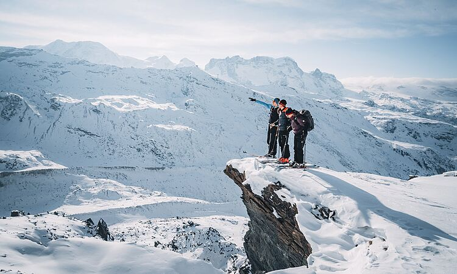
Haute Route Chamonix–Zermatt, Breithorn, Fluehorn & Pfulwe mit Abfahrt direkt nach Täsch.
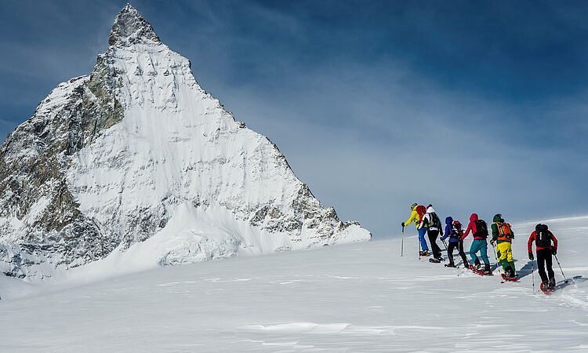
Gemütliche Touren durch die Winterlandschaft — z.B. der Matterhorn Glacier Trail vom Trockenen Steg.
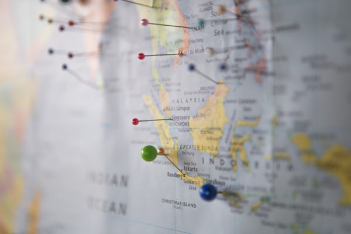
Übernachtung im Iglu mit Fondue-Dinner und Sternenhimmel — ein unvergessliches Wintererlebnis.
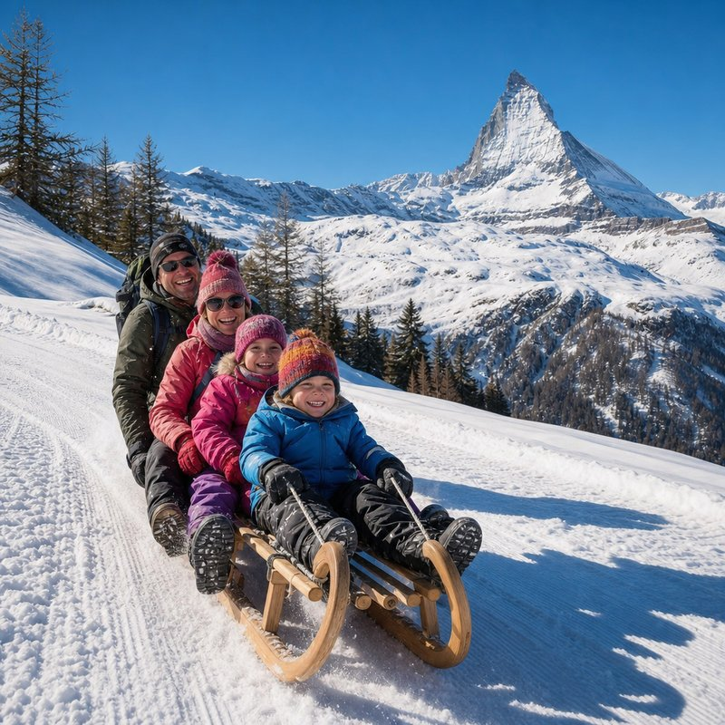
Beleuchtete Rodel- und Schlittelbahnen für die ganze Familie — auch abends, auch für Einsteiger.
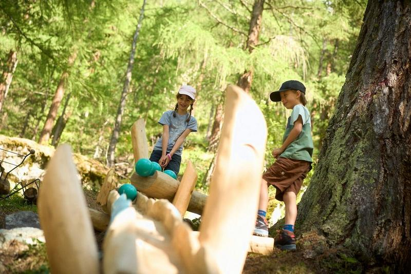
Über 400 km markierte Wege — vom Five Lakes Trail mit Matterhornspiegelung bis zur Schwarzsee-Route.
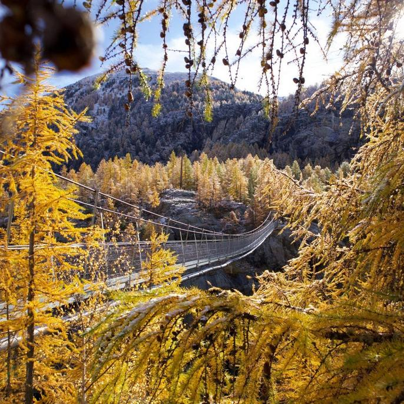
Schwindelerregende Hängebrücke über der Schlucht bei Furi (1.867 m) — spektakuläres Alpenpanorama.
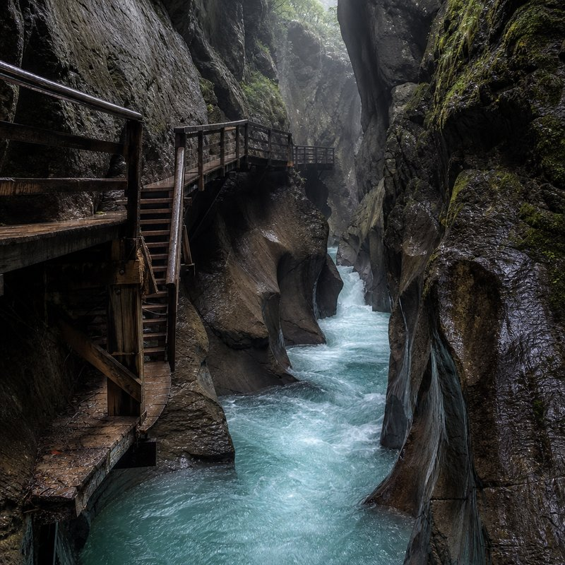
Beeindruckende Schlucht bei Furi — schmaler Holzsteg entlang wilder Felswände, für jeden begehbar.
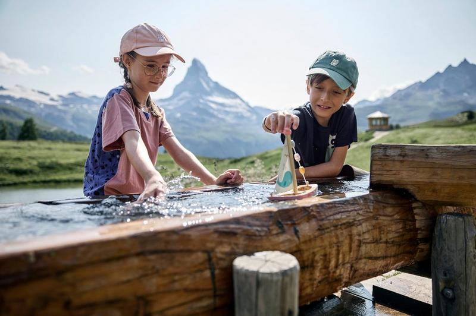
Flowige Trails zwischen 1.400 und 3.000 m — Verleiher direkt in Zermatt, Shuttles für Uphill verfügbar.
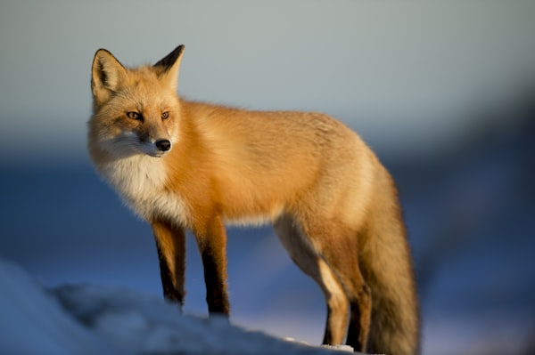
Murmeltiere, Steinböcke & Adler mit Swarovski-Ferngläsern bei Rotenboden und Aroleid beobachten.
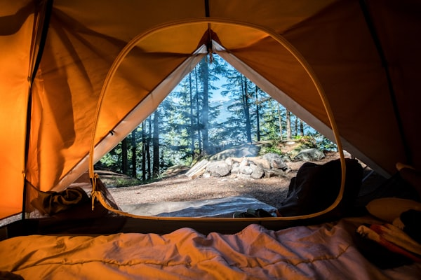
Naturbadestrand auf 2.232 m bei Sunnegga — angenehme Wassertemperatur, Spielfloss, Grillplätze.
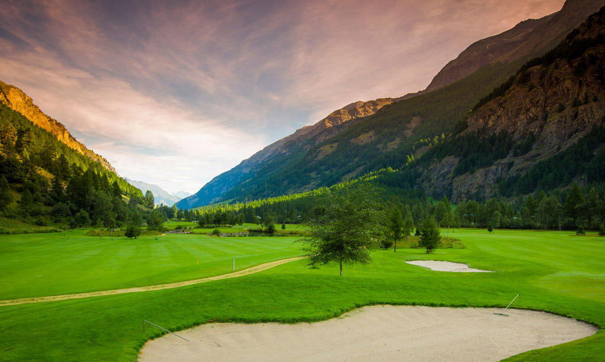
9-Loch-Parcours direkt bei Täsch-Randa (1.400 m) mit Blick auf die Walliser Alpen — Driving Range & Clubhaus.
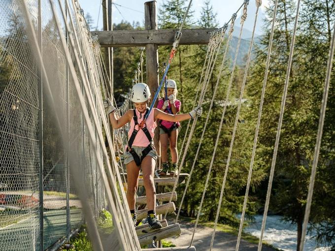
Hochseilgarten mit 5 Parcours, 25 Ziplines und 110 Hindernissen am Ende des Dorfes — Spaß für alle Altersgruppen.